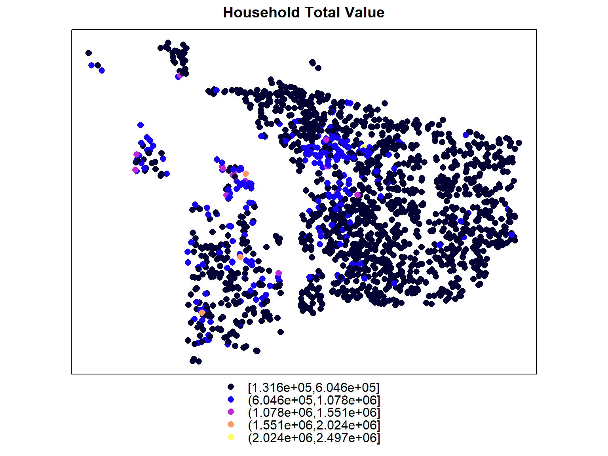
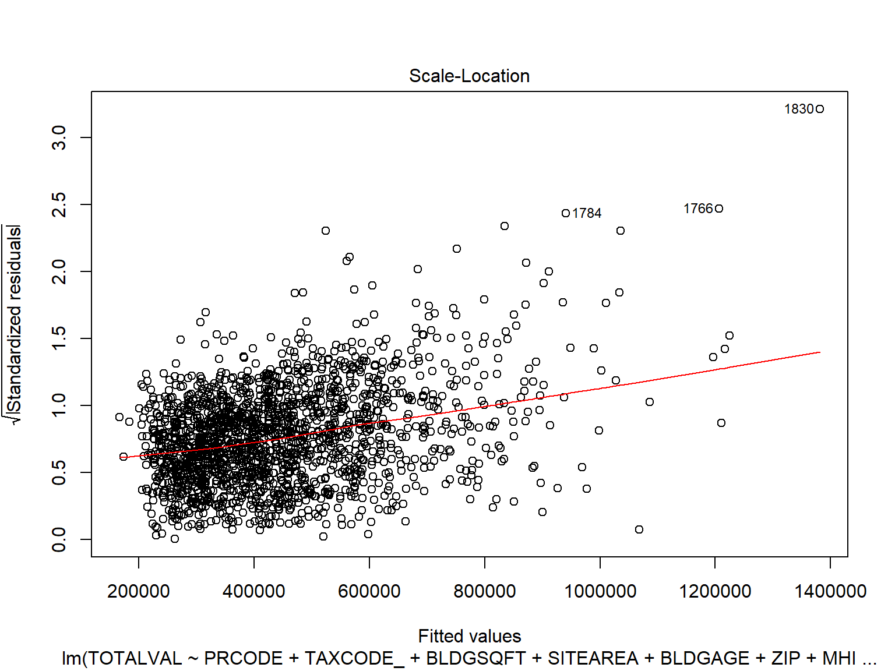
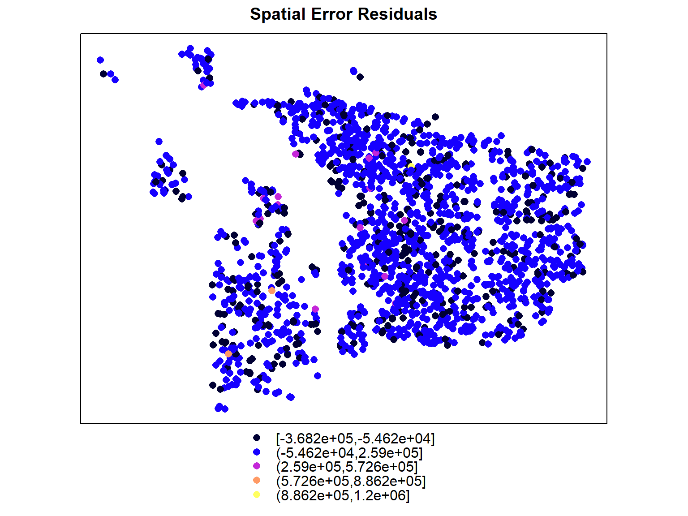
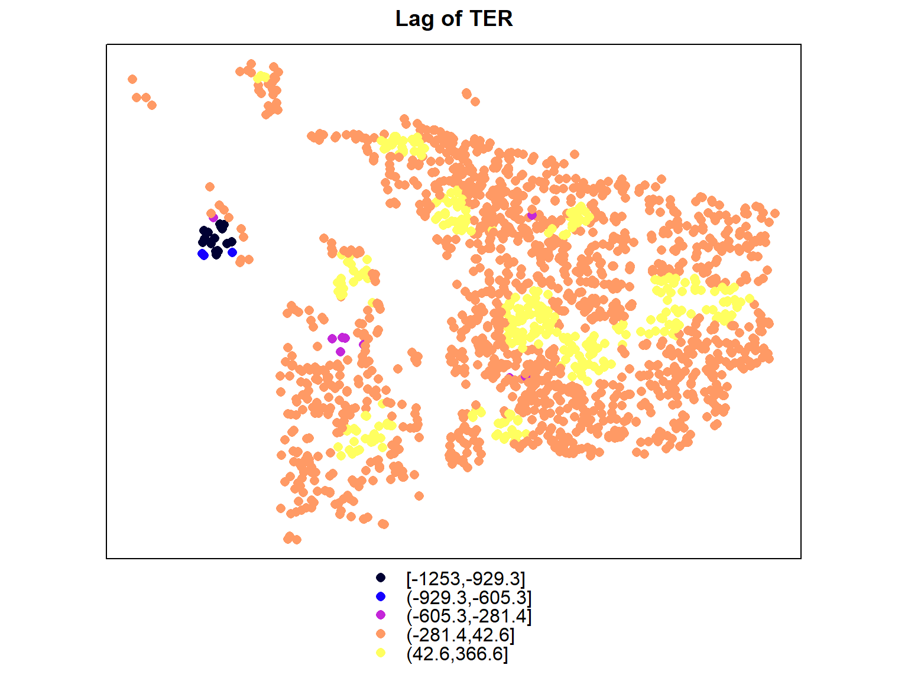
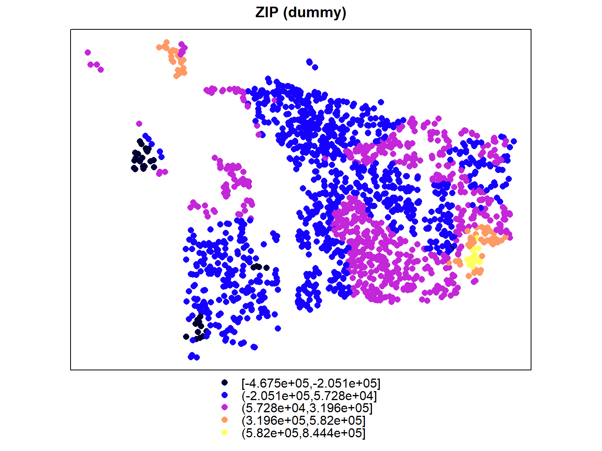
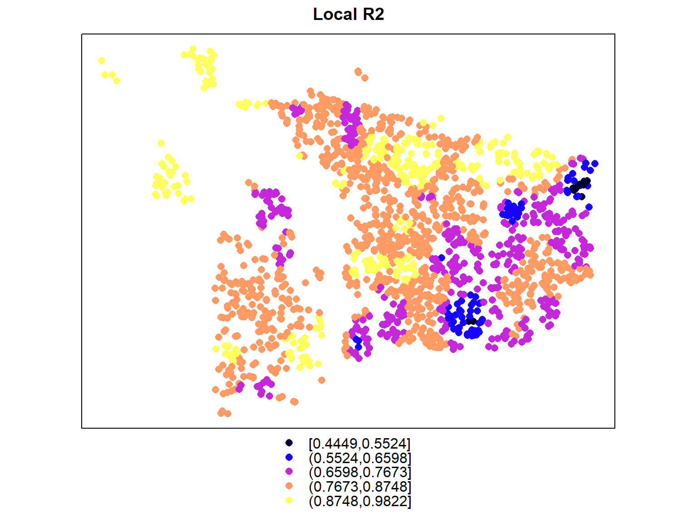
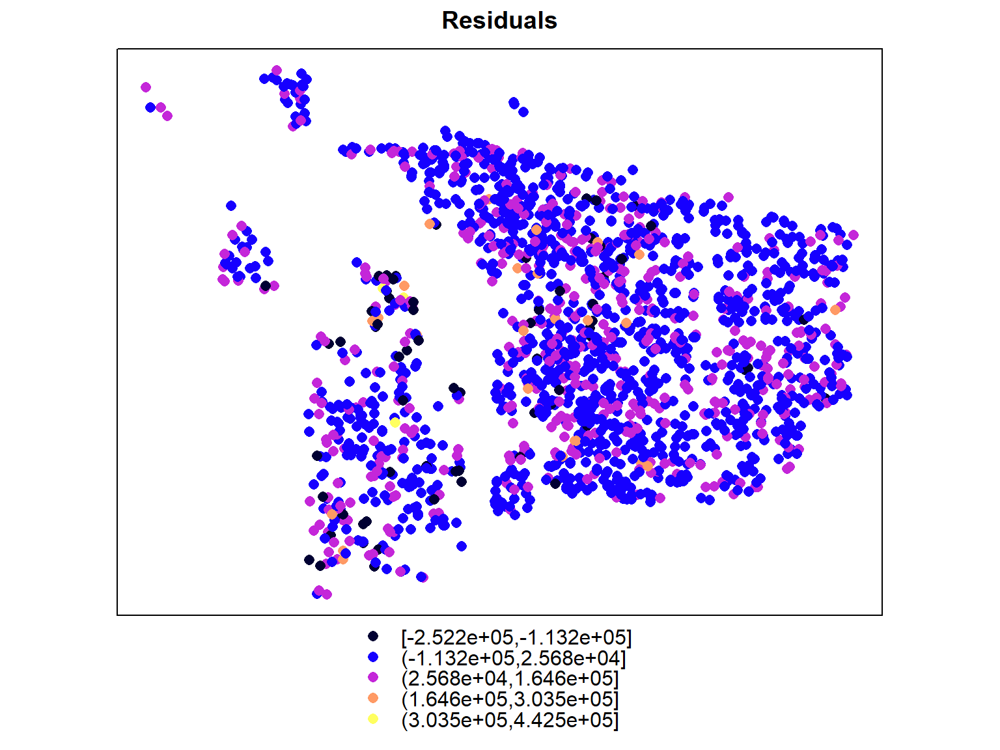
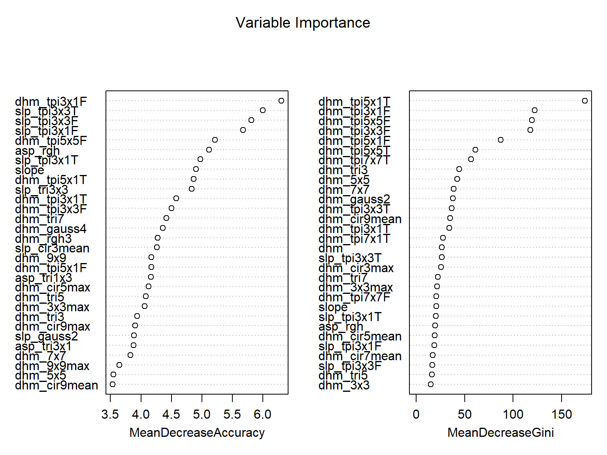
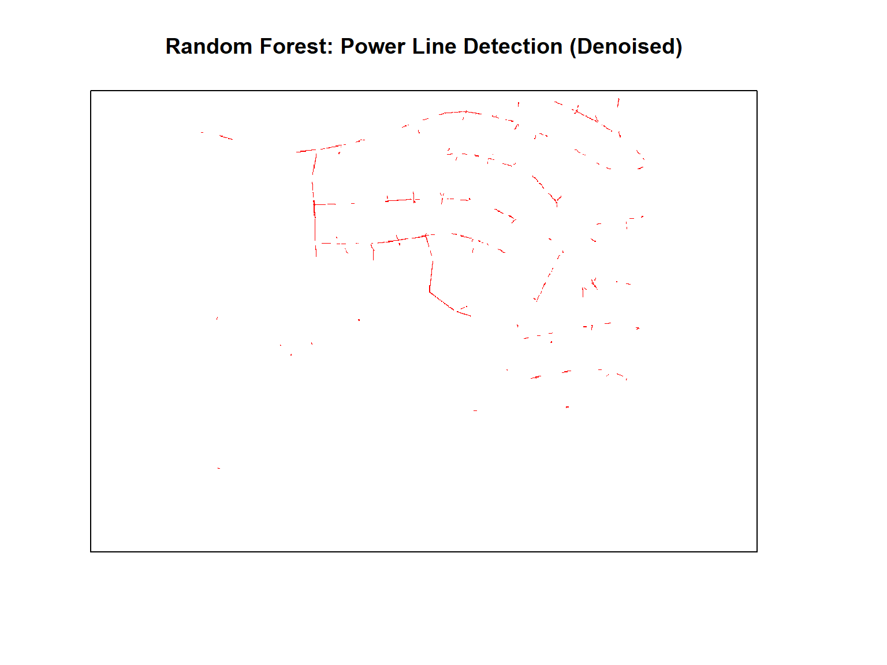
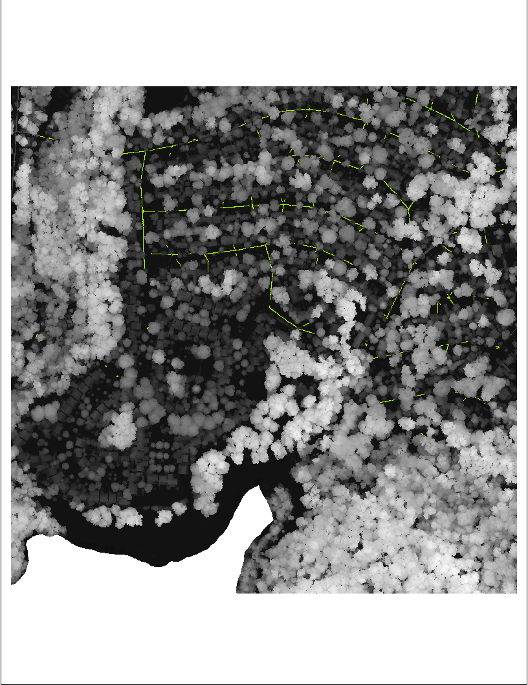

GEOG597 Final Report
Spencer Keller
March 13, 2019
Spatial Hedonic Regression
Exploring Total Value of Households/Property
spplot(HH_final, 'TOTALVAL', main = 'Household Total Value')
Does the dependent variable exhibit spatial autocorrelation?
#Moran's I of dependent variable
moran.mc(HH_final$TOTALVAL, listw = HH_w, nsim = 999, na.action = na.omit)##
## Monte-Carlo simulation of Moran I
##
## data: HH_final$TOTALVAL
## weights: HH_w
## number of simulations + 1: 1000
##
## statistic = 0.4401, observed rank = 1000, p-value = 0.001
## alternative hypothesis: greater-It would appear so ..
How can we explain total property value?
- PROP_CODE == ‘131’ (dummy)
- TAXCODE == ‘296’ (dummy)
- BLDGSQFT
- SITEAREA
- BLDGAGE
- ZIP == ‘97305’|‘97201’|‘97210’|‘97212’|‘97213’|‘97219’|‘97229’ (dummy)
- MHI
- lag_zip
- lag_ter (lag of distance to roadnetwork type == ‘TER’)
- lag_fwy
- lag_hwy
OLS Model
summary(lm(TOTALVAL ~ PRCODE+ TAXCODE_+ BLDGSQFT+ SITEAREA+ BLDGAGE+ ZIP+ MHI+ lag_zip+ lag_ter+ lag_fwy+ lag_hwy, data = HH_final))##
## Call:
## lm(formula = TOTALVAL ~ PRCODE + TAXCODE_ + BLDGSQFT + SITEAREA +
## BLDGAGE + ZIP + MHI + lag_zip + lag_ter + lag_fwy + lag_hwy,
## data = HH_final)
##
## Residuals:
## Min 1Q Median 3Q Max
## -434201 -64589 -6868 57486 1115373
##
## Coefficients:
## Estimate Std. Error t value Pr(>|t|)
## (Intercept) -1.385e+04 1.372e+04 -1.010 0.312826
## PRCODE -7.382e+04 6.315e+04 -1.169 0.242530
## TAXCODE_ 2.257e+05 1.095e+05 2.061 0.039487 *
## BLDGSQFT 1.827e+02 3.682e+00 49.610 < 2e-16 ***
## SITEAREA 1.254e+00 3.745e-01 3.348 0.000831 ***
## BLDGAGE 1.549e+03 8.768e+01 17.663 < 2e-16 ***
## ZIP 7.145e+04 8.427e+03 8.479 < 2e-16 ***
## MHI 4.245e-01 8.222e-02 5.163 2.69e-07 ***
## lag_zip -3.762e+04 1.278e+04 -2.944 0.003276 **
## lag_ter -1.336e+01 2.417e+00 -5.527 3.72e-08 ***
## lag_fwy 1.282e+00 1.861e+00 0.689 0.490918
## lag_hwy 8.355e+00 4.448e+00 1.878 0.060484 .
## ---
## Signif. codes: 0 '***' 0.001 '**' 0.01 '*' 0.05 '.' 0.1 ' ' 1
##
## Residual standard error: 109200 on 1837 degrees of freedom
## Multiple R-squared: 0.6943, Adjusted R-squared: 0.6925
## F-statistic: 379.4 on 11 and 1837 DF, p-value: < 2.2e-16-Not awful ..
Plot residuals
plot(olsmod, 3)
OLS RMSE
rmse_ols## [1] 108808.4Give or take $108,808 aint bad
Is our variance inflation under control?
car::vif(olsmod)## PRCODE TAXCODE_ BLDGSQFT SITEAREA BLDGAGE ZIP MHI lag_zip
## 1.002244 1.005886 1.227663 1.064743 1.048301 2.019762 1.323101 2.030956
## lag_ter lag_fwy lag_hwy
## 1.230455 1.132458 1.217701- You better believe it
Let’s take this further ..
The Lagrange Multiplier will lead the way!
summary(lm.LMtests(model = olsmod, listw = HH_w, test = "all"))## Lagrange multiplier diagnostics for spatial dependence
## data:
## model: lm(formula = TOTALVAL ~ PRCODE + TAXCODE_ + BLDGSQFT +
## SITEAREA + BLDGAGE + ZIP + MHI + lag_zip + lag_ter + lag_fwy +
## lag_hwy, data = HH_final)
## weights: HH_w
##
## statistic parameter p.value
## LMerr 1129.50 1 < 2.2e-16 ***
## LMlag 943.25 1 < 2.2e-16 ***
## RLMerr 450.22 1 < 2.2e-16 ***
## RLMlag 263.97 1 < 2.2e-16 ***
## SARMA 1393.47 2 < 2.2e-16 ***
## ---
## Signif. codes: 0 '***' 0.001 '**' 0.01 '*' 0.05 '.' 0.1 ' ' 1- All significant, but the Spatial Error model sticks out so we’ll start there
Spatial Error Model
summary(mod_err, Nagelkerke = T)##
## Call:
## spdep::errorsarlm(formula = TOTALVAL ~ PRCODE + TAXCODE_ + BLDGSQFT +
## SITEAREA + BLDGAGE + ZIP + MHI + lag_zip + lag_fwy + lag_ter +
## lag_hwy, data = HH_final, listw = HH_w, na.action = na.omit,
## tol.solve = 1e-10)
##
## Residuals:
## Min 1Q Median 3Q Max
## -368222.2 -49508.9 -2762.9 39522.6 1199799.8
##
## Type: error
## Coefficients: (asymptotic standard errors)
## Estimate Std. Error z value Pr(>|z|)
## (Intercept) 1.1988e+05 3.4108e+04 3.5147 0.0004403
## PRCODE -8.3410e+04 5.2169e+04 -1.5988 0.1098561
## TAXCODE_ 2.3388e+05 8.9653e+04 2.6087 0.0090882
## BLDGSQFT 1.6313e+02 3.1816e+00 51.2737 < 2.2e-16
## SITEAREA 2.9617e+00 3.5549e-01 8.3312 < 2.2e-16
## BLDGAGE 6.9490e+02 8.4514e+01 8.2222 2.22e-16
## ZIP -1.9738e+03 9.5697e+03 -0.2063 0.8365928
## MHI 1.2524e-01 1.0159e-01 1.2329 0.2176248
## lag_zip 2.0692e+04 2.9864e+04 0.6929 0.4883987
## lag_fwy 2.6060e+00 7.1356e+00 0.3652 0.7149497
## lag_ter -2.3867e+01 9.2484e+00 -2.5806 0.0098623
## lag_hwy 6.1809e+00 1.3362e+01 0.4626 0.6436582
##
## Lambda: 0.82838, LR test value: 540, p-value: < 2.22e-16
## Approximate (numerical Hessian) standard error: 0.022174
## z-value: 37.358, p-value: < 2.22e-16
## Wald statistic: 1395.6, p-value: < 2.22e-16
##
## Log likelihood: -23797.11 for error model
## ML residual variance (sigma squared): 8384700000, (sigma: 91568)
## Nagelkerke pseudo-R-squared: 0.77175
## Number of observations: 1849
## Number of parameters estimated: 14
## AIC: 47622, (AIC for lm: 48160)- NKR2: 77.175
Spatial Error RMSE
moderr_RMSE## [1] 91568.11Spatial Lag Model?
summary(mod_lag, Nagelkerke = T)##
## Call:spdep::lagsarlm(formula = TOTALVAL ~ PRCODE + TAXCODE_ + BLDGSQFT +
## SITEAREA + BLDGAGE + ZIP + MHI + lag_zip + lag_fwy + lag_ter +
## lag_hwy, data = HH_final, listw = HH_w, na.action = na.omit,
## tol.solve = 1e-30)
##
## Residuals:
## Min 1Q Median 3Q Max
## -376472.2 -50866.9 -3288.1 43723.4 1205155.7
##
## Type: lag
## Coefficients: (asymptotic standard errors)
## Estimate Std. Error z value Pr(>|z|)
## (Intercept) -1.6633e+05 1.3233e+04 -12.5697 < 2.2e-16
## PRCODE -1.1405e+05 5.4005e+04 -2.1118 0.03470
## TAXCODE_ 2.0888e+05 9.3606e+04 2.2315 0.02565
## BLDGSQFT 1.6334e+02 3.2401e+00 50.4134 < 2.2e-16
## SITEAREA 1.7505e+00 3.2138e-01 5.4470 5.122e-08
## BLDGAGE 1.0697e+03 7.5251e+01 14.2148 < 2.2e-16
## ZIP -4.7235e+02 7.6200e+03 -0.0620 0.95057
## MHI -6.5194e-02 7.3626e-02 -0.8855 0.37590
## lag_zip -6.5300e+03 1.0969e+04 -0.5953 0.55164
## lag_fwy -1.1786e+00 1.5906e+00 -0.7410 0.45871
## lag_ter 3.0225e-02 2.1282e+00 0.0142 0.98867
## lag_hwy 3.4545e-01 3.8114e+00 0.0906 0.92778
##
## Rho: 0.5747, LR test value: 533.87, p-value: < 2.22e-16
## Asymptotic standard error: 0.021834
## z-value: 26.321, p-value: < 2.22e-16
## Wald statistic: 692.81, p-value: < 2.22e-16
##
## Log likelihood: -23800.17 for lag model
## ML residual variance (sigma squared): 8.7e+09, (sigma: 93274)
## Nagelkerke pseudo-R-squared: 0.771
## Number of observations: 1849
## Number of parameters estimated: 14
## AIC: 47628, (AIC for lm: 48160)
## LM test for residual autocorrelation
## test value: 19.162, p-value: 1.2008e-05- NKR2: 77.1
Spatial Lag RMSE
lag_RMSE## [1] 97860.32Durbin?!
summary(mod_durbin, Nagelkerke = T)##
## Call:spdep::lagsarlm(formula = TOTALVAL ~ PRCODE + TAXCODE_ + BLDGSQFT +
## SITEAREA + BLDGAGE + ZIP + MHI + lag_zip + lag_fwy + lag_ter +
## lag_hwy, data = HH_final, listw = HH_w, na.action = na.omit,
## type = "Durbin", tol.solve = 1e-30)
##
## Residuals:
## Min 1Q Median 3Q Max
## -381544.12 -48629.01 -857.86 40712.89 1164590.44
##
## Type: mixed
## Coefficients: (asymptotic standard errors)
## Estimate Std. Error z value Pr(>|z|)
## (Intercept) -1.9279e+05 2.5844e+04 -7.4597 8.682e-14
## PRCODE -1.2848e+05 5.2820e+04 -2.4325 0.0149966
## TAXCODE_ 2.3885e+05 9.1557e+04 2.6088 0.0090866
## BLDGSQFT 1.6459e+02 3.1592e+00 52.1002 < 2.2e-16
## SITEAREA 3.1644e+00 3.5653e-01 8.8755 < 2.2e-16
## BLDGAGE 7.0230e+02 8.4040e+01 8.3567 < 2.2e-16
## ZIP -7.9195e+03 9.7764e+03 -0.8101 0.4179043
## MHI 7.8607e-02 1.0502e-01 0.7485 0.4541659
## lag_zip -2.0620e+04 5.3177e+04 -0.3878 0.6981943
## lag_fwy -5.3965e+01 2.5345e+01 -2.1292 0.0332339
## lag_ter -3.9101e+01 2.4837e+01 -1.5743 0.1154155
## lag_hwy 2.3341e+01 2.8130e+01 0.8297 0.4066915
## lag.PRCODE -6.7154e+05 2.6176e+05 -2.5655 0.0103036
## lag.TAXCODE_ 2.2093e+04 3.3714e+05 0.0655 0.9477503
## lag.BLDGSQFT -3.0438e+01 1.4850e+01 -2.0497 0.0403950
## lag.SITEAREA -1.9004e+00 5.5037e-01 -3.4530 0.0005543
## lag.BLDGAGE 1.2440e+03 2.2960e+02 5.4182 6.019e-08
## lag.ZIP 3.4858e+04 1.8135e+04 1.9221 0.0545893
## lag.MHI -1.6543e-01 1.6583e-01 -0.9976 0.3184563
## lag.lag_zip -1.1046e+04 5.6270e+04 -0.1963 0.8443666
## lag.lag_fwy 5.7751e+01 2.6425e+01 2.1855 0.0288505
## lag.lag_ter 4.1454e+01 2.5626e+01 1.6177 0.1057322
## lag.lag_hwy -2.7304e+01 3.1107e+01 -0.8777 0.3800822
##
## Rho: 0.58508, LR test value: 171.52, p-value: < 2.22e-16
## Asymptotic standard error: 0.041383
## z-value: 14.138, p-value: < 2.22e-16
## Wald statistic: 199.89, p-value: < 2.22e-16
##
## Log likelihood: -23741.59 for mixed model
## ML residual variance (sigma squared): 8158700000, (sigma: 90325)
## Nagelkerke pseudo-R-squared: 0.78506
## Number of observations: 1849
## Number of parameters estimated: 25
## AIC: 47533, (AIC for lm: 47703)
## LM test for residual autocorrelation
## test value: 6.9019, p-value: 0.0086102-NKR2: 78.5
Durbin RMSE
durbin_rmse## [1] 90325.38Comparing models
anova(mod_err, mod_lag, mod_durbin)## Model df AIC logLik Test L.Ratio p-value
## mod_err 1 14 47622 -23797 1
## mod_lag 2 14 47628 -23800 1
## mod_durbin 3 25 47533 -23742 2 117.17 0Reduce(rbind, lapply(list(mod_err,mod_lag,mod_durbin), function(i)data.frame(model = i$type, 'NK R2' = summary(i, Nagelkerke = T)$NK)))## model NK.R2
## 1 error 0.7717538
## 2 lag 0.7709961
## 3 mixed 0.7850572-Durbin has slightly better explanatory power
Did the Spatial Error Model remove the spatial autocorrelation?
moran.mc(mod_err$residuals, listw = HHw_sub, nsim = 999, na.action = na.omit)##
## Monte-Carlo simulation of Moran I
##
## data: mod_err$residuals
## weights: HHw_sub
## number of simulations + 1: 1000
##
## statistic = -0.016944, observed rank = 6, p-value = 0.994
## alternative hypothesis: greater- Yep!
Let’s map those residuals because .. geography
spplot(HH_final, 'resid_err', main = 'Spatial Error Residuals')

Geographic Weighted Regression
Defining a formula
f <- TOTALVAL ~ PRCODE+ TAXCODE_+ BLDGSQFT+ SITEAREA+ BLDGAGE+ ZIP+ MHI+ lag_zip+ lag_fwy+ lag_ter+ lag_hwySetting bandwidth
gwr_bandw <- ggwr.sel(
formula = f,
data = HH_final,
adapt = T,
longlat = F
)Running the model
mod_gwr <- gwr(
formula = f,
data = HH_gwr,
adapt = gwr_bandw,
longlat = F,
hatmatrix = T
)Model results …
mod_gwr## Call:
## gwr(formula = f, data = HH_gwr, adapt = gwr_bandw, hatmatrix = T,
## longlat = F)
## Kernel function: gwr.Gauss
## Adaptive quantile: 0.009747059 (about 18 of 1849 data points)
## Summary of GWR coefficient estimates at data points:
## Min. 1st Qu. Median 3rd Qu. Max.
## X.Intercept. -1.1932e+06 1.1796e+04 1.4217e+05 2.5919e+05 4.2430e+06
## PRCODE -1.0830e+06 -2.0039e+05 -8.7138e+04 2.0798e+04 1.2920e+06
## TAXCODE_ -3.4421e+06 6.1146e+02 2.3919e+05 3.8081e+05 2.0897e+06
## BLDGSQFT 5.0567e+01 1.0666e+02 1.3864e+02 1.7575e+02 2.4766e+02
## SITEAREA -7.2228e+00 3.5998e+00 6.2621e+00 1.2880e+01 9.7702e+01
## BLDGAGE -8.4840e+03 7.1740e+01 3.8782e+02 7.7599e+02 2.3101e+03
## ZIP -4.6747e+05 -3.5878e+04 3.1024e+04 9.8984e+04 8.4440e+05
## MHI -4.3079e+00 -5.1251e-01 -8.5275e-02 2.6560e-01 1.9663e+00
## lag_zip -1.1784e+07 -1.2183e+05 3.7934e+04 1.5251e+05 7.4750e+06
## lag_fwy -1.9138e+02 -2.0087e+01 9.8225e+00 4.3552e+01 3.9463e+02
## lag_ter -1.2532e+03 -5.5724e+01 -1.1352e+01 2.4441e+01 3.6656e+02
## lag_hwy -1.4683e+03 -3.8386e+01 -1.8829e+00 4.1586e+01 3.9726e+02
## Global
## X.Intercept. -13854.3184
## PRCODE -73823.1132
## TAXCODE_ 225657.9131
## BLDGSQFT 182.6549
## SITEAREA 1.2536
## BLDGAGE 1548.6339
## ZIP 71451.6009
## MHI 0.4245
## lag_zip -37623.2576
## lag_fwy 1.2824
## lag_ter -13.3567
## lag_hwy 8.3548
## Number of data points: 1849
## Effective number of parameters (residual: 2traceS - traceS'S): 414.3879
## Effective degrees of freedom (residual: 2traceS - traceS'S): 1434.612
## Sigma (residual: 2traceS - traceS'S): 71920.89
## Effective number of parameters (model: traceS): 311.6066
## Effective degrees of freedom (model: traceS): 1537.393
## Sigma (model: traceS): 69475.19
## Sigma (ML): 63351.05
## AICc (GWR p. 61, eq 2.33; p. 96, eq. 4.21): 46886.89
## AIC (GWR p. 96, eq. 4.22): 46445.58
## Residual sum of squares: 7.420695e+12
## Quasi-global R2: 0.8963853- Quasi-Global R2: 89.63
Neat patterns: Terrace dwellers
spplot(HH_gwr, 'beta_lter', main = 'Lag of TER')
Neat patterns: Zip dummy variable
spplot(HH_gwr, 'beta_zip', main = 'ZIP (dummy)')
Neat patterns: Local R2
spplot(HH_gwr, 'beta_lr2', main = 'Local R2')
Neat patterns: Residuals
spplot(HH_gwr, 'beta_err', main = 'Residuals')
GWR RMSE
rmse_gwr## [1] 63351.05- Quite a bit better than our other RMSE!
Machine Learning
Scoping out powerlines from lidar imagery
plot(dhm, col = bw)
Just a handful of predictors …
dhm_stack <- stack(dhm, dhm_3x3, dhm_3x3max, dhm_3x3min, dhm_5x5, dhm_5x5max, dhm_5x5min, dhm_7x7, dhm_7x7max, dhm_7x7min, dhm_9x9, dhm_9x9max, dhm_9x9min,
dhm_cir3mean, dhm_cir3min, dhm_cir3max, dhm_cir5mean, dhm_cir5min, dhm_cir5max, dhm_cir7mean, dhm_cir7min, dhm_cir7max, dhm_cir9mean,
dhm_cir9min, dhm_cir9max, dhm_gauss2, dhm_gauss3, dhm_gauss4, slope, slp_cir3mean, slp_gauss2, aspect, asp_cir3mean, asp_gauss2,
dhm_tri3, dhm_tri5, dhm_tri7, slp_tri1x3, slp_tri3x1, slp_tri3x3, slp_tri3x5, slp_tri5, slp_tri7, asp_tri1x3, asp_tri3x1, asp_tri3x5,
asp_tri5, asp_tri7, dhm_tpi3x1F, dhm_tpi3x1T, dhm_tpi3x3F, dhm_tpi3x3T, dhm_tpi5x1F, dhm_tpi5x1T, dhm_tpi5x5F, dhm_tpi5x5T,
dhm_tpi7x1F, dhm_tpi7x1T, dhm_tpi7x7F, dhm_tpi7x7T, slp_tpi3x1F, slp_tpi3x1T, slp_tpi3x3F, slp_tpi3x3T, asp_tpi3x1F, asp_tpi3x1T,
asp_tpi3x3F, asp_tpi3x3T, dhm_rgh3, slp_rgh, asp_rgh)Random Forest with 70/30 split
set.seed(31337) #yikes
rf_mod <- randomForest(
formula = as.factor(class)~.,
data = dat_train,
keep.inbag = TRUE,
ntree = 40, #Pruned the heck outta the default 500
importance = T
)
rf_mod##
## Call:
## randomForest(formula = as.factor(class) ~ ., data = dat_train, keep.inbag = TRUE, ntree = 40, importance = T)
## Type of random forest: classification
## Number of trees: 40
## No. of variables tried at each split: 8
##
## OOB estimate of error rate: 3.18%
## Confusion matrix:
## 0 1 class.error
## 0 2519 36 0.01409002
## 1 81 1038 0.07238606- OOB error estimate: 3.18%
% Correct
table(pred_accuracy)## pred_accuracy
## FALSE TRUE
## 54 1521-Not awful
sum(pred_accuracy)/length(pred_accuracy)## [1] 0.9657143- 96.57% accurate
Important variables?
varImpPlot(rf_mod, main = 'Variable Importance')
Predicted Raster (denoised)
plot(clean_raster, col = 'red', axes = F, legend = F, main = "Random Forest: Power Line Detection (Denoised)")
Predicted overlaid on dhm
